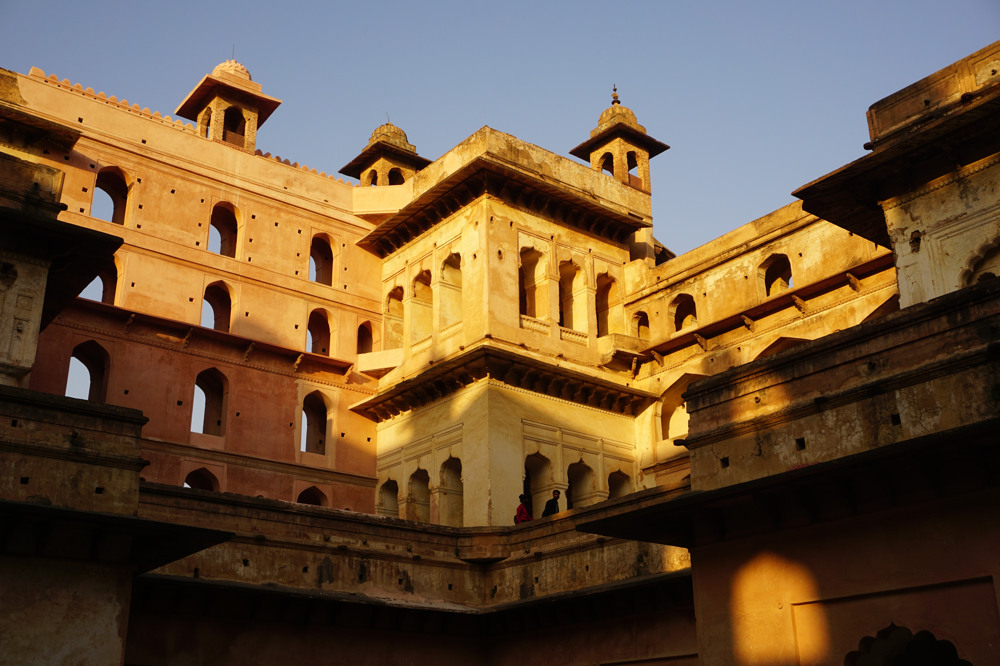

Gwalior Fort is perched on a large sandstone hill called Gopachal, dominating the city of Gwalior. It's often referred to as the Gibraltar of India because of its formidable structure. Its architecture, including Man Singh Palace, Gujari Mahal, Sas Bahu Temple, and Teli Ka Mandir, showcases a blend of styles. The fort also houses an archaeological museum and offers a mesmerizing sound and light show. Don't miss the panoramic views it provides.
Jai Vilas Palace, situated in Gwalior, is a breathtaking architectural masterpiece that seamlessly fuses European and Indian design. The palace houses the Jai Vilas Museum, where you'll find the World's largest Chandelier, a stunning silver train, crystal furniture, and an Extensive Library.
Orchha Fort, nestled in the charming town of Orchha, is a striking blend of Rajput and Mughal architecture, showcasing grand palaces, such as Jahangir Mahal and Raj Mahal, adorned with intricately carved facades and ornate interiors. Orchha Fort stands as a captivating jewel in Madhya Pradesh's historical crown, inviting exploration and admiration.
Mandu Fort, perched amidst the picturesque landscape of Mandu in Madhya Pradesh, is a historic gem that resonates with tales of love and grandeur. The fort's stunning vistas and the stories of the past come together to create an enchanting ambiance, making it a perfect destination for those seeking history, architecture, and romance in one beautiful package. It boasts exquisite palaces, like Jahaz Mahal (Ship Palace) and Hindola Mahal (Swinging Palace), showcasing splendid architectural craftsmanship.
Raisen Fort, located near Bhopal in Madhya Pradesh, is a historic stronghold that bears witness to a rich past. Its architecture reflects a blend of Indian and Mughal styles, and it offers panoramic views of the surrounding landscapes.Raisen Fort stands as a testament to the region's heritage and is a captivating site for history enthusiasts and admirers of architectural beauty.
Lal Bagh Palace in Indore is an architectural marvel that exudes opulence and regal charm. It seamlessly blends European and Indian architectural styles, featuring grandiose Italian marble columns, imposing chandeliers, and exquisite frescoes. It showcases a fascinating collection of royal memorabilia and paintings. Lal Bagh Palace offers a glimpse into the grandeur of the Holkar dynasty and is a must-visit destination for those interested in history and architecture.